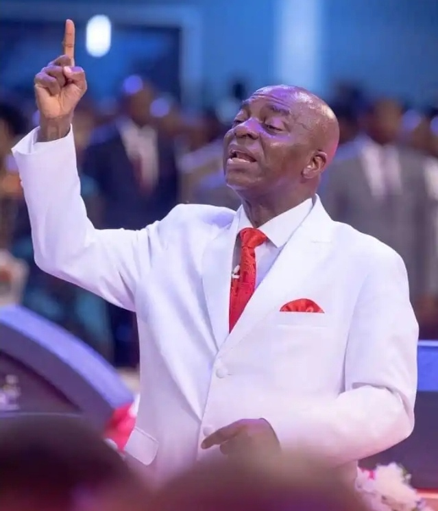
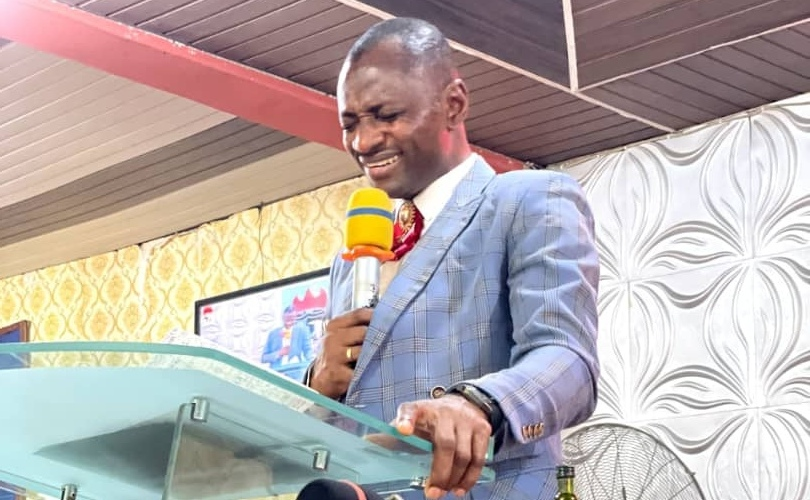

Now the hour has come to Liberate the World from all Oppressions of the devil,through the Preaching of the Word of Faith,and I am sending you to undertake this task
This mandate was further confirmed from the epistle of Paul to the Ephesians where God Said, “Above all, taking the shield of faith, wherewith ye shall be able to quench all the fiery darts of the wicked” (Eph 6:16). This was the genesis of this global ministry today and according to this mandate, the Word of Faith is the key to triumphant living. Shortly, thereafter, a weekly teaching programme took-off popularly known as the Faith Liberation Hour. Alongside, a caucus was put in place, tagged The Power House which was involved in prayers and fasting among others towards the actualization of this heavenly vision. Today, testimonies of liberation through our messages, books, tapes, magazines and other periodicals are most humbling. The word of faith is working like fire for the liberation of mankind across the nations.
Our twelve pillars connote the Scriptural structure upon which the Liberation Mandate is built. These pillars form our teaching syllabus as church and constitute our doctrinal platform. Because they are twelve in number, each pillar is selected as the focus for each month of the year. We have stood firm upon these twelve stones and they have resulted in breakthroughs – both for the ministry and all that are partakers of the same grace with us. We have crossed Jordan into power, bearing the ark of liberation and have experienced amazing testimonies ever since this commission was handed down in May, 1981
1.Faith(1 John 5:4)(Matt. 17:20)(Eph. 6:16)( James 1:5-6)
2.The Word(Ps. 138:2)(Heb. 1:3)(Isa. 9:8)
3.The supernatural(Mark 16:17-18)
4.The Holy spirit (Acts 1:1-8)
5.Prosperity
6.Prayer (1 Thess. 5:16)
7.Healing (1 Peter 2:24)
8.Wisdom (Prov 4:7-11)
9.Success (Prov. 4:18)(Gal.3:13-14)
10.Vision (Prov. 29:18)
11.Consecration(Ps. 63:8)(Phil.1:21)
12.Praise
BISHOP DAVID OYEDEPO (born 27 September 1954) is a Nigerian preacher, the founder of the Living Faith Church Worldwide, and presiding Bishop of the Faith Tabernacle in Ota, Ogun State, Nigeria. The church is also known as Winners' Chapel International.
Pastor Emmanuel Oluwatosin is the Resident pastor of living faith church Ogale,a man sent by God.He is known for the great impact he has made in the lives of various people.Pastor Emmanuel Oluwatosin became the resident pastor in 2024,and has made great impact spritually and physically.He is a role model to many youth and teenagers.He is committed passionately to the preaching of the Word of God and teaching the principles of faith in the fulfilment of destiny. In his assignment, he passionately pursues, teaches and preaches the Liberation Messages as delivered to the Founder and President of the Living Faith Church Worldwide, Bishop David Oyedepo. The mandate is already in quick succession finding full expression throughout the length and breadth of the world including Ogale. He is happily married with children.We are happy to say we are blessed..